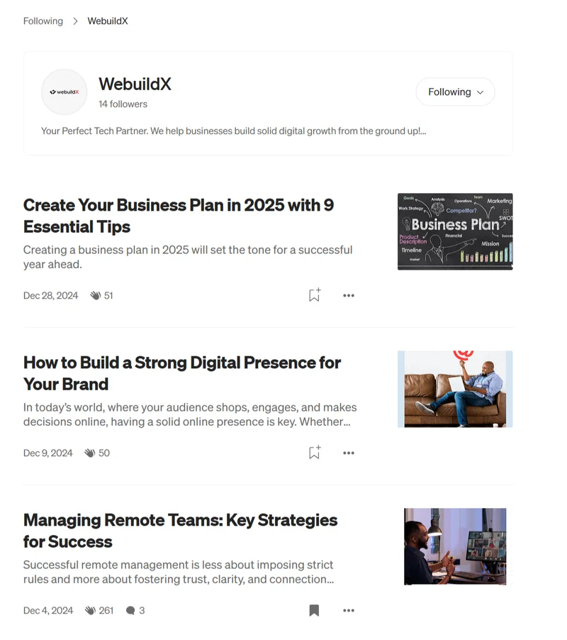

WebuildX
An engineering talent company with no website at all. The team and I built it from scratch and created the content that brought clients to its door.
Lead Technical Writer and Website Builder. Client project, 2024 to 2025.

The Context
WebuildX calls itself the builders behind the builders. Companies bring a tech need, and WebuildX supplies the engineers to meet it, from software to product.
When I arrived, there was no website. The service existed, but it had nowhere to live online.
The Core Problem
No site meant no search presence and no proof. WebuildX also had two audiences to win at once: engineers who judge the detail, and decision-makers who only want the problem solved.
The Struggle
Talent supply is a crowded niche, and it sounds like every other recruiter. The copy had to be clear to engineers and executives alike, and it started with no content, no keyword history and no data.
The Execution
- Build around the offer. I structured the site around what WebuildX sells and how it delivers, then built it in Framer.
- Choose keywords with evidence. Ahrefs and the Semrush tracker showed what buyers search for. Google Analytics then showed how readers behaved, so I could sharpen the list.
- Create copy for two readers. Website, landing page and campaign copy speak plainly to non-technical buyers and keep the detail technical readers want.
- Keep readers coming back. Blog posts built audience retention. I then reshaped the best ideas for Medium, Instagram, LinkedIn and X.
- Keep everyone on message. I reviewed performance with Google Analytics, Zutrix and Yoast, and worked with product, support, design and marketing so the message stayed consistent.
Tools: Ahrefs, Semrush, Google Analytics, Zutrix, Yoast and Framer.
The Win
WebuildX went from no website to a front door that works, and a number of clients arrived through it. Within a year, over three clients received an engineering team and saw their projects delivered.
The blog earned attention too. A post on managing remote teams drew 261 claps and 3 comments on Medium, and the three posts shown here collected 362 claps between them.
